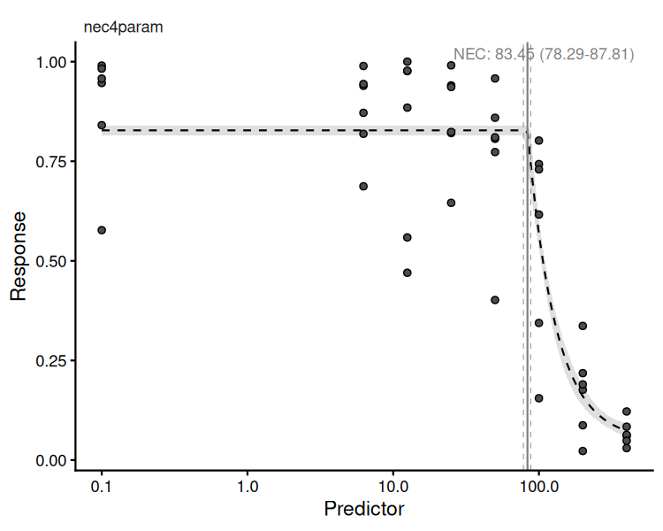
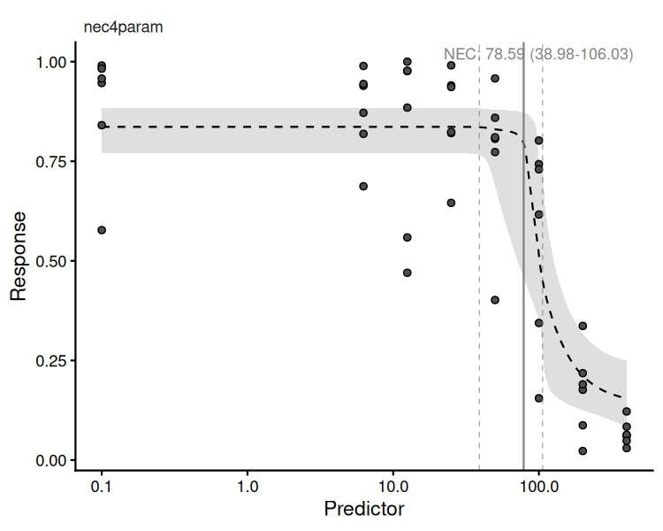
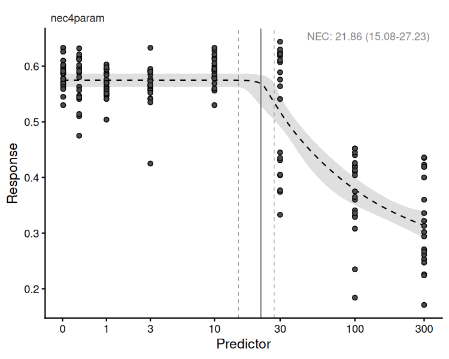
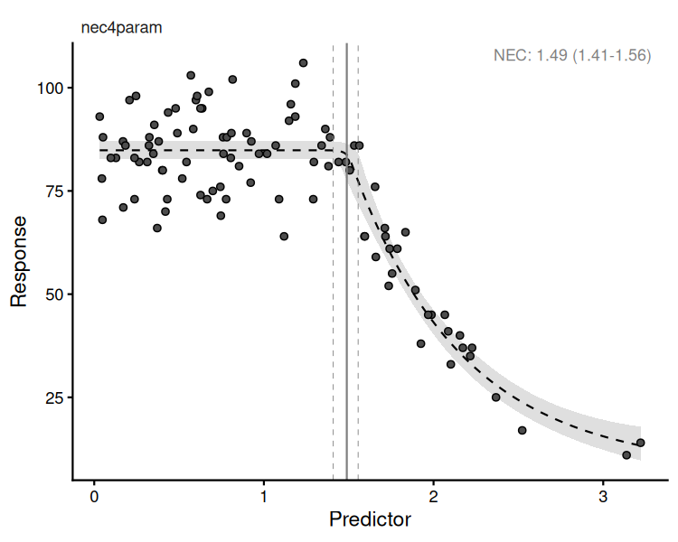
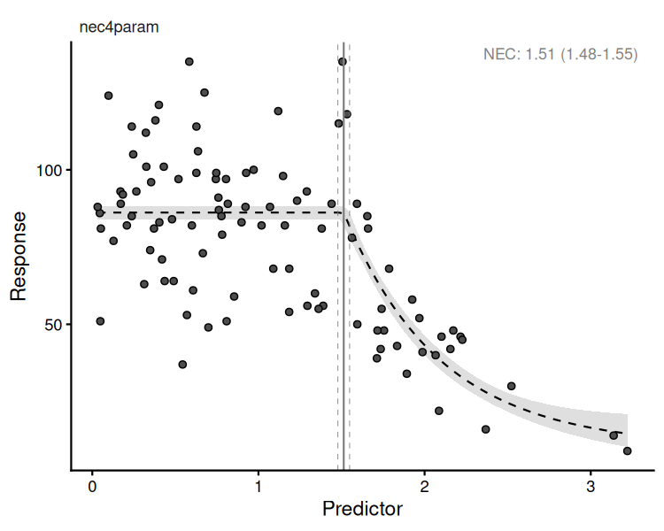
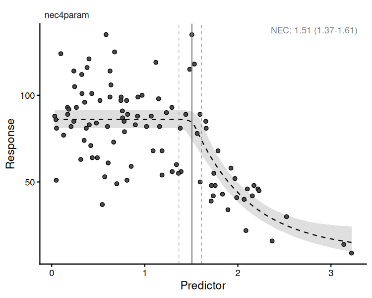
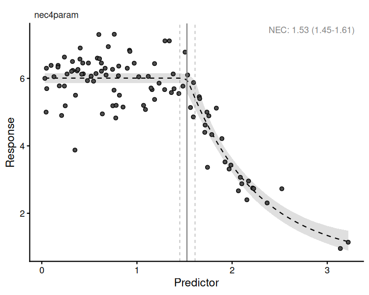
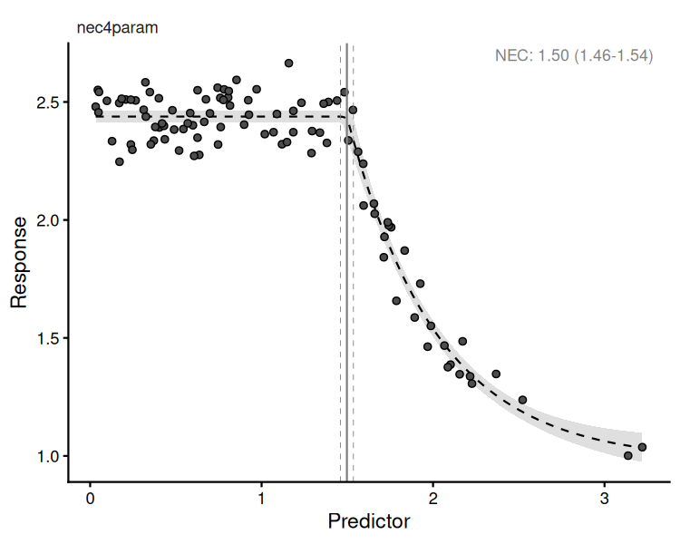
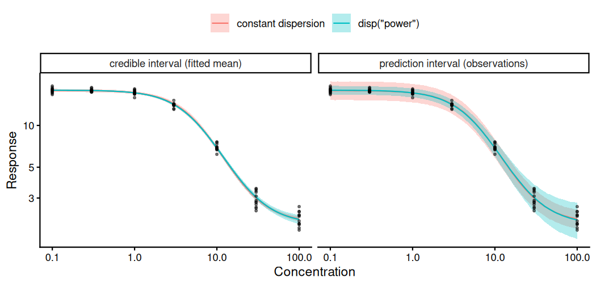

bayesnec
The bayesnec is an R package to fit concentration(dose)
— response curves to toxicity data, and derive No-Effect-Concentration
(NEC), No-Significant-Effect-Concentration (NSEC,
(Fisher and Fox 2023)), and
Effect-Concentration (of specified percentage “x”, ECx)
thresholds from non-linear models fitted using Bayesian Hamiltonian
Monte Carlo (HMC) via brms (Bürkner
2017; Bürkner 2018) and stan. The package is an
adaptation and extension of an initial package jagsNEC
(Fisher et al. 2020) which was based on
the R2jags package (Su and Yajima
2024) and jags (Plummer
2003).
Bayesian model fitting can be difficult to automate across a broad
range of usage cases, particularly with respect to specifying valid
initial values and appropriate priors. This is one reason the use of
Bayesian statistics for NEC estimation (or even ECx
estimation) is not currently widely adopted across the broader
ecotoxicological community, who rarely have access to specialist
statistical expertise. The bayesnec package provides an
accessible interface specifically for fitting NEC models and
other concentration—response models using Bayesian methods. A range of
models are specified based on the known distribution of the
“concentration” or “dose” variable (the predictor) as well as the
“response” variable. The package requires a simplified model formula,
which together with the data is used to wrangle more complex non-linear
model formula(s), as well as to generate priors and initial values
required to call a brms model. While the distribution of
the predictor and response variables can be specified directly,
bayesnec will automatically attempt to assign the correct
distribution to use based on the characteristics of the provided
data.
This project started with an implementation of the NEC model
based on that described in (Pires et al. 2002) and (Fox 2010) using R2jags (Fisher et al. 2020). The package has been
further generalised to allow a large range of response variables to be
modelled using the appropriate statistical distribution. While the
original jagsNEC implementation supported Gaussian-,
Poisson-, Binomial-, Gamma-, Negative Binomial- and Beta-distributed
response data, bayesnec additionally supports the
Beta-Binomial distribution, and can be easily extended to include any of
the available brms families. We have since also further
added a range of alternative NEC model types, as well as a
range of concentration—response models (such as 4-parameter logistic and
Weibull models) that are commonly used in frequentist-based packages
such as drc(Ritz et al.
2015). These models do not employ segmented linear regression
(i.e., use of a step function) but model the response as a
smooth function of concentration. They can be used to derive no-effect
toxicity estimates as a no-significant-effect-concentration (Fisher and Fox 2023).
Specific models can be fit directly using bnec, which is
what we discuss here. Alternatively, it is possible to fit a custom
model set, a specific model set, or all the available models. Further
information on fitting multi-models using bayesnec can be
found in the Multi
model usage vignette. For detailed information on the models
available in bayesnec see the Model
details vignette.
Important information on the current package is contained in the
bayesnec help-files and the Model
details vignette.
This package is currently under development. We are keen to receive any feedback regarding usage, and especially bug reporting that includes an easy to run self-contained reproducible example of unexpected behaviour, or example model fits that fail to converge (have poor chain mixing) or yield other errors. Such information will hopefully help us towards building a more robust package. We cannot help troubleshoot issues if an easy-to-run reproducible example is not supplied.
To install the latest release version from CRAN use
install.packages("bayesnec")The current development version can be downloaded from GitHub via
if (!requireNamespace("remotes")) {
install.packages("remotes")
}
remotes::install_github("open-aims/bayesnec", ref = "dev")Because bayesnec is based on brms and Stan, a C++ compiler is required. The
program Rtools comes
with a C++ compiler for Windows. On Mac, you should install Xcode. See
the prerequisites section on this link
for further instructions on how to get the compilers running.
The Installation
and setup vignette describes this in detail, including both
brms back ends (rstan and
cmdstanr), the cmdstanr installation used to
build these vignettes, and the failures most often encountered on
Windows.
To run this vignette, we will also need some additional packages
Concentration—response experiments are usually designed as a dilution series, in which each concentration is a fixed multiple of the one below it. On a linear scale this design places the low concentrations close together and the high concentrations far apart. The model equation then uses its flexibility at the top of the range, where the response has often already levelled off, and has few distinct concentrations in the region where the response is changing.
The scale on which the predictor is modelled is therefore an
important decision, and one that is left to the user: bnec
uses the concentration as supplied, without transformation. This
decision is best made before any model is fitted, because it will
generally have more influence on the results than the choice of model
equation. For example, for one algal dataset, fitting
nec4param to log(dose) instead of the raw dose
reduced the maximum lack of fit in the mean from 0.2115 to 0.0676 (on a
response spanning about 0.7), whereas five different equations fitted to
log(dose) were all within 1.2 elpd_loo of one
another.
The appropriate scale can be identified from the spacing of the concentrations in the design, not from the response. If the concentrations are close to evenly spaced after a log transformation, the series was designed on a log scale and is usually best modelled on that scale:
# the concentrations used in the Beta example below
conc <- c(0.01, 0.3, 1, 3, 10, 30, 100, 300)
# coefficient of variation of the gaps between adjacent concentrations:
# small means evenly spaced on that scale
spacing_cv <- function(x) sd(diff(sort(x))) / mean(diff(sort(x)))
round(c(linear = spacing_cv(conc), log = spacing_cv(log(conc))), 2)
#> linear log
#> 1.72 0.58For these concentrations, the coefficient of variation of the gaps is 1.72 on the linear scale and 0.58 on the log scale.
Any simple transformation can be written directly inside
crf (e.g. crf(log(x), model = "nec4param")),
and this has two consequences. First, the transformation is evaluated
before bayesnec checks the predictor, so a control
concentration recorded as 0 is passed to the data check as
log(0), and bnec stops with an error that the
predictor contains values that are not finite. bayesnec
does not correct a zero on the predictor axis on either the recorded or
the transformed scale, because a concentration of zero is an ordinary
control and no response distribution constrains the values a predictor
can take. Where a logarithm is used, an offset therefore needs to be
chosen by the user and added to the data before fitting.
Second, the model is fitted on the transformed scale. However,
nec, ecx, nsec and the plotting
methods return the toxicity estimates on the recorded scale. A function
passed as xform is instead applied to an estimate on the
transformed scale, so xform = identity returns the
transformed scale and the inverse of the transformation returns the
recorded scale, as in the following example:
The inline form and a pre-computed column (as in the code below) are
equivalent ways of writing the model, and give identical estimates on
the transformed scale, whether the transformation is of a bare variable
(e.g. log(x)) or its argument contains arithmetic
(e.g. log(x + 1)).
The inline and column forms differ only in the scale on which
estimates are returned by default. Because bayesnec cannot
see the transformation used to create a column, estimates from the
column form are on the scale of log_x and need
xform = function(x) exp(x) - 1 to return them to the
recorded scale, whereas the inline form applies this inverse
automatically:
nec4param model using
bnec
Here we include some examples showing how to use the package to fit
an NEC model to binomial, proportional, count and continuous
response data. The examples are those used at: https://github.com/gerard-ricardo/NECs/blob/master/NECs,
but here we are showing how to fit models to these data using the
bayesnec package. Note however, the default behaviour in
bayesnec is to use the "identity" link because
the native link functions for each family (e.g., "logit"
for Binomial, "log" for Poisson) introduce non-linear
transformation on formulas which are already non-linear. So please be
aware that estimates of NEC or ECx might not be as
expected when using link functions other than identity (see the Model
details vignette for more information and the models available in
bayesnec).
The response variable is considered to follow a binomial distribution
when it is a count out of a total (such as the percentage survival of
individuals, for example). First, we read in the binomial example from
pastebin, prepare the data for
analysis, and then inspect the dataset as well as the “concentration”,
in this case raw_x.
binom_data <- "https://pastebin.com/raw/zfrUha88" |>
read.table(header = TRUE, dec = ",", stringsAsFactors = FALSE) |>
dplyr::rename(raw_x = raw.x) |>
dplyr::mutate(raw_x = as.numeric(as.character(raw_x)))
str(binom_data)
#> 'data.frame': 48 obs. of 3 variables:
#> $ raw_x: num 0.1 0.1 0.1 0.1 0.1 0.1 6.25 6.25 6.25 6.25 ...
#> $ suc : int 101 106 102 112 58 158 95 91 93 113 ...
#> $ tot : int 175 112 103 114 69 165 109 92 99 138 ...
summary(binom_data$raw_x)
#> Min. 1st Qu. Median Mean 3rd Qu. Max.
#> 0.10 10.94 37.50 99.23 125.00 400.00In this case for raw_x, lowest concentration is 0.1 and
the highest is 400. The data are right skewed and on the continuous
scale. This type of distribution for the predictor data are common for
concentration—response experiments, where the concentration
data are the concentration of contaminants, or dilutions. The current
default in bayesnec is to estimate the appropriate
distribution(s) and priors based on the data, but it is possible to
supply prior or family directly as additional
arguments to the underlying brm function from
brms. We are going to model this with the predictor data on
a log scale, as this is the scaling clearly used in the experimental
design and thus will provide more stable results.
The data are binomial, with the column suc indicating
the number of successes in the binomial call, and column
tot indicating the number of trials.
The main working function in bayesnec is the function
bnec, which calls the other necessary functions and fits
the brms model. We can run bnec by supplying
formula: a special formula which comprises the relationship
between response and predictor, and the C-R model (or models) chosen to
be fitted; and data: a data.frame containing
the data for the model fitting, here, binom_data.
The basic bayesnec formula should be of the form:
suc | trials(tot) ~ crf(log(raw_x), model = "your_model")where the left-hand side of the formula is implemented exactly as in
brms, including the trials term. The
right-hand side of the formula contains the special internal function
crf (which stands for concentration-response function), and
takes the predictor (including any simple function transformations such
as log) and the desired C-R model or suite of models. As
with any formula in R, the name of the terms need to be exactly as they
are in the input data.frame.
bnec will guess the data types for use, although as
mentioned above we could manually specify family as
"binomial" (or binomial, or
binomial()). bnec will also generate
appropriate priors for the brms model call, although these
can also be specified manually (see the Priors
vignette for more details).
library(bayesnec)
exp_1 <- bnec(suc | trials(tot) ~ crf(log(raw_x), model = "nec4param"),
data = binom_data, seed = 333)The function shows the progress of the brms fit and
returns the usual brms output (with a few other elements
added to this list). The function plot(pull_brmsfit(exp_1))
can be used to plot the chains, so we can assess mixing and look for
other potential issues with the model fit. We can also run a pairs plot
that can help to assess issues with identifiability, and which also
looks OK. There are a range of other model diagnostics that can be
explored for brms model fits, using the function
pull_brmsfit. We encourage you to explore the rich material
already on GitHub regarding use and validation of brms models.
Initially bayesnec will attempt to use starting values
generated for that type of model formula and family. It will run the
iterations and then test if all chains are valid. If the model does not
have valid chains bayesnec will discard that model and an
error will be returned indicating the model could not be fit
successfully.
Whenever the model argument of crf is a
single model bnec will return an object of class
bayesnecfit. We can see the summary of our fitted model
parameters using:
summary(exp_1)
#> Object of class bayesnecfit containing the nec4param model
#>
#> Family: binomial
#> Links: mu = identity
#> Formula: suc | trials(tot) ~ bot + (top - bot) * exp(-exp(beta) * (log(raw_x) - nec) * step(log(raw_x) - nec))
#> bot ~ 1
#> top ~ 1
#> beta ~ 1
#> nec ~ 1
#> Data: data (Number of observations: 48)
#> Draws: 4 chains, each with iter = 10000; warmup = 8000; thin = 1;
#> total post-warmup draws = 8000
#>
#> Regression Coefficients:
#> Estimate Est.Error l-95% CI u-95% CI Rhat Bulk_ESS Tail_ESS
#> bot 0.05 0.02 0.02 0.08 1.00 3037 2949
#> top 0.83 0.01 0.81 0.84 1.00 4454 4379
#> beta 0.80 0.13 0.56 1.08 1.00 2663 3153
#> nec 4.42 0.03 4.36 4.48 1.00 3270 3747
#>
#> Draws were sampled using sample(hmc). For each parameter, Bulk_ESS
#> and Tail_ESS are effective sample size measures, and Rhat is the potential
#> scale reduction factor on split chains (at convergence, Rhat = 1).
#>
#> Divergent transitions after warmup: 0
#>
#>
#> Estimate Q2.5 Q97.5
#> NEC 83.45 78.29 87.81
#>
#>
#> Bayesian R2 estimates:
#> Estimate Est.Error Q2.5 Q97.5
#> R2 0.81 0.00 0.80 0.82
#>
#>
#> Fitted by bayesnec 2.1.3.44, installed from a local source, which records no commit, under R 4.6.1.Note the Rhat values in this example are one, indicating convergence.
The functions plot (extending base plot
method) and autoplot (extending ggplot2 plot
method) can be used to plot the fitted model. You can also make your own
plot from the data included in the returned object (class
bayesnecfit) from the call to bnec.
Notice, however, that in this case we log-transformed the
predictor raw_x in the input formula. This causes
brms to pass these transformations onto Stan’s native code,
so the parameters of the model (including nec) are
estimated on the log scale, although the derived toxicity estimates and
the plots are returned on the data scale. The additional argument
xform is applied to an estimate on the fitted scale, so
supplying the inverse of the transformation (exp, as in the
call below) also returns the data scale. Because the concentrations from
6.25 to 400 are a two-fold dilution series, we also plot them on a log
axis (scale_x_continuous(transform = "log10")), on which
these steps are evenly spaced (the lowest concentration, 0.1, is about
six steps below the next).
autoplot(exp_1, xform = exp) +
scale_x_continuous(transform = "log10")
plot of chunk exmp1-binom
There are many built in methods available for brmsfit
objects and we encourage you to make use of these in full.
This model fit does not look great. You can see that the error bounds
around the fit are far too narrow for this data given the variability
among the points, suggesting over dispersion of this model (meaning that
the data are more variable than this model fit predicts). For models
whose response data are Binomial- or Poisson-distributed, an estimate of
dispersion is provided by bayesnec, and this can be
extracted using exp_1$dispersion. Values > 1 indicate
overdispersion and values < 1 indicate underdispersion. In this case
the overdispersion value is much bigger than 1, suggesting extreme
overdispersion (meaning our model does not properly capture the true
variability represented in this data). We would need to consider
alternative ways of modelling this data using a different distribution,
such as the Beta-Binomial.
exp_1$dispersion
#> Estimate Q2.5 Q97.5 P(>1)
#> 17.59272 11.96617 27.20065 1.00000The Beta-Binomial model can be useful for overdispersed Binomial data.
exp_1b <- bnec(suc | trials(tot) ~ crf(log(raw_x), model = "nec4param"),
data = binom_data, family = beta_binomial(link = "identity"),
seed = 333)Fitting this data with the beta_binomial yields a much
more realistic fit in terms of the confidence bounds (check
autoplot(exp_1b, xform = exp)) and the spread in the data.
Note that a dispersion estimate is not provided here, as overdispersion
is only relevant for Poisson and Binomial data.
autoplot(exp_1b, xform = exp) +
scale_x_continuous(transform = "log10")
plot of chunk exmp1-bbinom
exp_1b$dispersion
#> Estimate Q2.5 Q97.5 P(>1)
#> NA NA NA NANow that we have a better fit to these data, we can interpret the
results. The estimated NEC value can be obtained directly from
the fitted model object. The posterior draws stored in the object are on
the fitted scale, so here they are transformed back to the data scale
(nec(exp_1b) returns this estimate on the data scale
directly).
summary(exp(exp_1b$ne_posterior))
#> Min. 1st Qu. Median Mean 3rd Qu. Max.
#> 18.06 65.26 78.59 76.11 87.95 191.89ECx estimates can also be obtained from the NEC
model fit, using the function ecx. Note these may differ
from a typical 4-parameter non-linear model, as the NEC model
is a broken stick non-linear regression and will often fall more sharply
than a smooth 4-parameter non-linear curve. See both the Model
details and Comparing
posterior predictions vignettes for more information.
ecx(exp_1b, xform = exp)
#> Q50 Q2.5 Q97.5
#> 82.90958 44.27604 106.79866
#> attr(,"resolution")
#> [1] 500
#> attr(,"ecx_val")
#> [1] 10
#> attr(,"toxicity_estimate")
#> [1] "ecx"A summary method has also been developed for bayesnecfit
objects that gives an overall summary of the model statistics. This
summary includes the estimate of NEC in two places: the
nec population-level effect, which is on the scale on which
the predictor was fitted (here log(raw_x)), and the
NEC row, which is on the data scale.
summary(exp_1b)
#> Object of class bayesnecfit containing the nec4param model
#>
#> Family: beta_binomial
#> Links: mu = identity
#> Formula: suc | trials(tot) ~ bot + (top - bot) * exp(-exp(beta) * (log(raw_x) - nec) * step(log(raw_x) - nec))
#> bot ~ 1
#> top ~ 1
#> beta ~ 1
#> nec ~ 1
#> Data: data (Number of observations: 48)
#> Draws: 4 chains, each with iter = 10000; warmup = 8000; thin = 1;
#> total post-warmup draws = 8000
#>
#> Regression Coefficients:
#> Estimate Est.Error l-95% CI u-95% CI Rhat Bulk_ESS Tail_ESS
#> bot 0.13 0.05 0.03 0.24 1.00 2134 3083
#> top 0.84 0.03 0.77 0.88 1.00 1277 1570
#> beta 0.84 0.68 -0.17 3.41 1.01 477 170
#> nec 4.36 0.20 3.66 4.66 1.01 486 182
#>
#> Further Distributional Parameters:
#> Estimate Est.Error l-95% CI u-95% CI Rhat Bulk_ESS Tail_ESS
#> phi 5.29 1.21 3.26 8.28 1.00 1832 3452
#>
#> Draws were sampled using sample(hmc). For each parameter, Bulk_ESS
#> and Tail_ESS are effective sample size measures, and Rhat is the potential
#> scale reduction factor on split chains (at convergence, Rhat = 1).
#>
#> Divergent transitions after warmup: 14
#>
#>
#> Estimate Q2.5 Q97.5
#> NEC 78.59 38.98 106.03
#>
#>
#> Bayesian R2 estimates:
#> Estimate Est.Error Q2.5 Q97.5
#> R2 0.76 0.04 0.66 0.81
#>
#>
#> Fitted by bayesnec 2.1.3.44, installed from a local source, which records no commit, under R 4.6.1.Sometimes the response variable is distributed between 0
and 1 but is not a straight-forward Binomial because it is
a proportion on the continuous scale. A common example in coral ecology
is maximum quantum yield (the proportion of light used for
photosynthesis when all reaction centres are open) which is a measure of
photosynthetic efficiency calculated from Pulse-Amplitude-Modulation
(PAM) data. Here we have a proportion value that is not based on trials
and successes. In this case there are no theoretical trials, and the
data must be modelled using a Beta distribution instead.
These data are from a three-fold dilution series, so (as described in
the section on the scale of the predictor above) we model the predictor
on a log scale. In this case we use log(raw_x + 1) instead
of log(raw_x), because the lowest concentration (0.01) is
thirty times below the next, whereas each of the other steps is a factor
of three. On a plain log scale this point would be 3.4 log units from
its neighbour, compared with about 1.1 for each of the other gaps, which
would give a single concentration a great deal of leverage over the
fitted curve. Adding the offset reduces the distance between this point
and its neighbour, and the series is then more evenly spaced than under
log(raw_x):
round(c(linear = spacing_cv(conc),
log = spacing_cv(log(conc)),
`log(x + 1)` = spacing_cv(log(conc + 1))), 2)
#> linear log log(x + 1)
#> 1.72 0.58 0.44With the offset, the coefficient of variation of the gaps is 0.44,
against 0.58 for log(raw_x). An offset of one is chosen for
convenience and not on any principle, although it is reasonable here
because the concentrations span several orders of magnitude and the
value one is within their range. Because the offset is written inside
crf(), it is part of the transformation that the estimators
and the plots invert, and these therefore return concentrations. The
xform passed below is this inverse written out explicitly,
and gives an identical figure. The concentration axis is drawn with
scale_x_continuous(transform = "log1p"), which is the scale
on which the model was fitted.
prop_data <- "https://pastebin.com/raw/123jq46d" |>
read.table(header = TRUE, dec = ",", stringsAsFactors = FALSE) |>
dplyr::rename(raw_x = raw.x) |>
dplyr::mutate(across(where(is.character), as.numeric))
exp_2 <- bnec(resp ~ crf(log(raw_x + 1), model = "nec4param"),
data = prop_data, seed = 333)
autoplot(exp_2, xform = function(x)exp(x) - 1) +
scale_x_continuous(transform = "log1p", breaks = c(0, 1, 3, 10, 30, 100, 300))
plot of chunk exmp1-beta
Where data are a count (of, for example, individuals or cells), the
response is likely to be Poisson distributed. Such data are distributed
from 0 to Inf and are integers. Here we
simulate counts with a mean that follows a nec4param curve
across the concentrations used elsewhere in this vignette, and then
summarise the concentration (i.e. predictor) data.
set.seed(333)
data(nec_data)
# The counts are drawn from a Poisson whose mean follows the curve, rather than
# built by adding Gaussian noise to a proportion and rounding. Additive noise of
# constant standard deviation leaves a variance that does not change with the
# mean, and no count distribution can represent that: neither a Poisson nor a
# Negative binomial fit would be adequate, so such data cannot be used to
# illustrate the difference between them.
nec4 <- function(x, top, bot, nec, beta) {
bot + (top - bot) * exp(-exp(beta) * (x - nec) * (x > nec))
}
count_mu <- nec4(nec_data$x, top = 85, bot = 5, nec = 1.5, beta = 0.3)
count_data <- data.frame(
x = nec_data$x,
y = as.integer(rpois(length(count_mu), count_mu))
)
str(count_data)
#> 'data.frame': 100 obs. of 2 variables:
#> $ x: num 1.019 0.816 0.371 0.401 1.295 ...
#> $ y: int 84 102 66 80 82 88 97 95 74 76 ...
summary(count_data$y)
#> Min. 1st Qu. Median Mean 3rd Qu. Max.
#> 11.00 65.75 82.00 74.76 88.00 106.00
summary(count_data$x)
#> Min. 1st Qu. Median Mean 3rd Qu. Max.
#> 0.03235 0.43424 0.87599 1.05142 1.59336 3.22052First, we supply bnec with data (here
count_data), and specify our formula. As we have integers
of 0 and greater, the family is "poisson". The
default behaviour to guess the variable types works for this
example.
exp_3 <- bnec(y ~ crf(x, model = "nec4param"), data = count_data,
seed = 333)
autoplot(exp_3)
plot of chunk exmp1-poisson
exp_3$dispersion
#> Estimate Q2.5 Q97.5 P(>1)
#> 0.9614115 0.7338588 1.2965095 0.3903750The dispersion estimate (described in the Binomial example above) is
close to one (0.96), as it should be for data simulated from a Poisson
distribution, and the width of the credible bands is consistent with the
spread of the points. We would also plot the model chains (with
plot(exp_3$fit)) and the parameter estimates to check the
fit.
Count data are often more variable than a Poisson distribution allows (a situation known as overdispersion), and in that case the Negative binomial distribution is generally used. To illustrate the difference, we simulate a second set of counts from the curve used above, but with additional (extra-Poisson) variability.
set.seed(333)
count_data_od <- data.frame(
x = nec_data$x,
y = as.integer(rnbinom(length(count_mu), mu = count_mu, size = 20))
)Fitting these data with a Poisson distribution gives credible bands that are far too narrow for the variability among the points and a dispersion estimate well above one, which indicates that a different distribution should be used.
exp_3b <- bnec(y ~ crf(x, model = "nec4param"), data = count_data_od,
seed = 333)
autoplot(exp_3b)
plot of chunk exmp1-poisson-od
exp_3b$dispersion
#> Estimate Q2.5 Q97.5 P(>1)
#> 4.890548 3.733693 6.565285 1.000000We can refit these data by deliberately specifying the Negative
binomial distribution via the family argument.
exp_3c <- bnec(y ~ crf(x, model = "nec4param"), data = count_data_od,
family = "negbinomial", seed = 333)The resultant plot has wider and more realistic credible bands than
the Poisson fit to these data. Note that a dispersion estimate is not
returned here, because bayesnec calculates one only for the
Poisson and Binomial families. See the Model
details and Multi
model usage vignettes for options to fit other models to these
data.
autoplot(exp_3c)
plot of chunk exmp1-negbinbase
A count is very often observed over an exposure that differs among
replicates (e.g. offspring counted in replicates with different numbers
of fecund adults, cells counted over different areas, or events counted
over different lengths of time). The rate term is used to
declare this exposure, and is available for the poisson and
negbinomial families. Here we simulate counts of offspring
where the number of females varies among replicates.
set.seed(333)
n_females <- sample(8:24, nrow(nec_data), replace = TRUE)
fecundity_data <- data.frame(
x = nec_data$x,
n_females = n_females,
# The curve gives a rate -- offspring per female -- and the Poisson mean is
# that rate multiplied by the number of females in the replicate, so the
# response is a genuine count rather than a ratio.
y = as.integer(rpois(nrow(nec_data),
nec4(nec_data$x, top = 6, bot = 0.4, nec = 1.5,
beta = 0.3) * n_females))
)The raw counts are passed to bnec unchanged, so a
replicate with twenty females contributes more information to the fit
than one with eight. This difference in information would be lost if
y / n_females were fitted as a continuous response.
exp_3d <- bnec(y | rate(n_females) ~ crf(x, model = "nec4param"),
data = fecundity_data, family = "poisson",
seed = 333)Because bnec uses an identity link, brms
applies the denominator multiplicatively on the response scale, and not
as a log offset on the linear predictor. The fitted mean is therefore
the rate itself, so top and bot can be
interpreted directly as offspring per female (and nec as a
concentration, as in the other examples). The denominator is set to 1 on
the prediction grid, so the fitted curve (and any ecx or
nsec estimate derived from it) is on this scale, and
autoplot divides the observed counts by the denominator so
that they are plotted on this scale as well.
autoplot(exp_3d)
plot of chunk exmp1-rate
exp_3d$ne
#> Estimate Q2.5 Q97.5
#> 1.525412 1.451266 1.610143
ecx(exp_3d, ecx_val = 10)
#> Q50 Q2.5 Q97.5
#> 1.611144 1.549528 1.680938
#> attr(,"resolution")
#> [1] 500
#> attr(,"ecx_val")
#> [1] 10
#> attr(,"toxicity_estimate")
#> [1] "ecx"
exp_3d$dispersion
#> Estimate Q2.5 Q97.5 P(>1)
#> 0.8804628 0.6716389 1.1833453 0.1998750The estimated NEC of 1.53 (95% credible interval 1.45 to 1.61) includes the value of 1.5 used to simulate these data, and the dispersion estimate (0.88) is close to one, as expected for counts simulated from a Poisson distribution.
The interpretation of a rate fit does, however, depend
on why the exposure varies. Where it varies for reasons unrelated to the
treatment (e.g. a replicate simply received fewer animals),
rate gives the intended estimate. Where the exposure is
itself an effect of the treatment (e.g. if n_females were
the number of females surviving to the time of counting), the
endpoint has silently changed from reproductive output to fecundity
conditional on survival. Both are legitimate, but they are different
endpoints and will not return the same NEC.
Where data are a measured variable, the response is likely to be
Gamma distributed. Good examples of Gamma-distributed data
include measures of body size, such as length, weight, or area. Such
data are distributed from 0+ to Inf and are
continuous. Here we use the nec_data supplied with
bayesnec with the response y on the
exponential scale to ensure the right data range for a Gamma as an
example.
exp_4 <- bnec(measure ~ crf(x, model = "nec4param"), data = measure_data,
seed = 333)
autoplot(exp_4)
plot of chunk exmp1-gammabase
summary(exp_4)
#> Object of class bayesnecfit containing the nec4param model
#>
#> Family: gamma
#> Links: mu = identity
#> Formula: measure ~ bot + (top - bot) * exp(-exp(beta) * (x - nec) * step(x - nec))
#> bot ~ 1
#> top ~ 1
#> beta ~ 1
#> nec ~ 1
#> Data: data (Number of observations: 100)
#> Draws: 4 chains, each with iter = 10000; warmup = 8000; thin = 1;
#> total post-warmup draws = 8000
#>
#> Regression Coefficients:
#> Estimate Est.Error l-95% CI u-95% CI Rhat Bulk_ESS Tail_ESS
#> bot 0.98 0.05 0.88 1.07 1.00 4057 4441
#> top 2.44 0.01 2.41 2.46 1.00 6760 5215
#> beta 0.65 0.10 0.45 0.84 1.00 3674 4223
#> nec 1.50 0.02 1.46 1.54 1.00 4335 4845
#>
#> Further Distributional Parameters:
#> Estimate Est.Error l-95% CI u-95% CI Rhat Bulk_ESS Tail_ESS
#> shape 515.06 74.50 379.72 680.88 1.00 6939 5087
#>
#> Draws were sampled using sample(hmc). For each parameter, Bulk_ESS
#> and Tail_ESS are effective sample size measures, and Rhat is the potential
#> scale reduction factor on split chains (at convergence, Rhat = 1).
#>
#> Divergent transitions after warmup: 0
#>
#>
#> Estimate Q2.5 Q97.5
#> NEC 1.50 1.46 1.54
#>
#>
#> Bayesian R2 estimates:
#> Estimate Est.Error Q2.5 Q97.5
#> R2 0.95 0.00 0.94 0.95
#>
#>
#> Fitted by bayesnec 2.1.3.44, installed from a local source, which records no commit, under R 4.6.1.In this case our model has converged really well.
Normalising the response to the control is conventional in ecotoxicology, usually as , where is the mean of three to six control replicates. Ritz et al. (2026) quantified the consequences of this practice. Because all observations are divided by a single random quantity, the normalised values are correlated, and the sampling variability of the divisor is discarded. In addition, applying Jensen’s inequality to gives , so the inhibition trend is biased downwards and the effective doses estimated from it are biased upwards. In their simulation of an ED10 with six controls, normalising gave a bias of 6.8% and a coefficient of variation of 26.4%, compared with 2.1% and 12.7% for the ED10 estimated from the raw response, and the coverage of nominal 95% intervals was 88–91%. Roughly half the reported variability was an artefact of the normalisation itself.
For these reasons, supply the response to bnec as
measured, and do not convert it to percent inhibition, percent of
control, or percent of the observed maximum beforehand. Nothing is lost
by not normalising, because the concentration at which inhibition
increases by
percent is the concentration at which the response declines by
percent, so both analyses answer the same question. This concentration
is what ecx(type = "absolute") (the default) already
returns:
where the decline is relative to the fitted control value,
not to an observed control mean. Because this is evaluated separately
within each posterior draw, the uncertainty in the control level is
propagated into the credible interval instead of being discarded. This
is the estimand Ritz et al. (2026)
recommend, and following their advice therefore requires no change to
bayesnec, only a change to the data supplied to it.
Dividing by the maximum observed response, instead of the control
mean, is worse for three reasons. First, an extreme order statistic is
more variable and more biased than a mean of three to six values.
Second, the divisor then depends on all treatments and not only on the
controls, so the treated groups partly determine their own denominator.
Third, it forces a single observation to equal 1, which is
outside the open
support of the Beta distribution. bnec must then shift this
observation off the boundary, which is a further distortion in addition
to the first two.
bnec checks for both practices and gives a message where
it detects either. Dividing by the observed maximum gives a maximum of
exactly 1 that is attained by only one observation, and
dividing by the control mean gives control observations with a mean of
exactly 1. Each message cites Ritz
et al. (2026) and ?ecx. The first check is not
applied when the response is on a rational grid (i.e. all values are
multiples of
for a single integer
up to 100), because genuine proportions derived from counts (e.g. 19/20
surviving) routinely include a single observation at 1 and
are not evidence of normalisation.
The problem is division by a random quantity, not division as such, and Ritz et al. (2026) are explicit on this point:
If the average growth rate in the control group was known beyond uncertainty, perhaps from historical data, there would be no problem.
This distinction is important for the Beta and
zero_inflated_beta families, which require a response on
the open interval
and therefore sometimes need a divisor. Where a divisor is required, it
must be a constant fixed before the analysis (a physiological or design
ceiling, or a value from accumulated historical controls), and never a
quantity calculated from the dataset being analysed.
Note also that ECx is invariant to the choice of a constant divisor,
because it is a relative decline from the fitted top.
Changing the divisor changes the meaning of top, but not
the toxicity estimate.
Many proportional responses do not need a divisor at all. For example, the maximum quantum yield used in the Beta example above is a genuine physical proportion on , as are a survival fraction and a bleached-area fraction. These responses are already on the appropriate scale, and should be modelled as they are.
A recorded value is censored when the true value is known to
be within an interval, and not at a point (e.g. a concentration below a
limit of detection, a cell count below the resolution of the method, or
a value rounded at the recording precision). The number recorded is
therefore a bound, not a measurement. Substituting a value for
it (such as zero, half the detection limit, or the bound itself treated
as though it had been observed) implies more than is known.
bayesnec passes through the cens() addition
term (aterm) from brms, so that the bound can be declared
instead:
y | cens(censoring) ~ crf(x, model = "nec4param")The censoring term is a variable in the data and not a
constant, because in a concentration-response dataset only some rows are
censored. It takes the values "none", "left",
"right" or "interval" (equivalently
0, -1, 1, 2), and
interval censoring takes a second argument giving the upper bound,
cens(censoring, upper).
For a censored row, the value in the response column is the bound. On a left-censored row this is the value at or below which the true value is known to be, and not zero or a guess at the unknown true value. The declaration supplies the upper end of the interval and the support of the family supplies the lower end, so a left-censored row under a Beta distribution implies only that the true value is in .
Because the bound has been declared, a censored row is exempt from
the boundary shifts that bnec otherwise applies to zeros
under the Gamma and Beta families (and to ones under the Beta family),
as shifting the bound would change what was declared. However, declaring
a row censored at a value the family excludes (left-censored at
0 under a Gamma or Beta distribution, or right-censored at
1 under a Beta distribution) gives an error and not a
shift, because the censored likelihood is degenerate there.
The reason for declaring the bound is the contribution each row makes to the likelihood. A censored row contributes (the probability of a value at or below the bound), and not a density at a point. As the fitted curve descends past the bound, increases towards 1 and then saturates, so the curve is not rewarded for passing further below the bound, but it is not penalised either. In contrast, a substituted value contributes a density, which declines as the curve descends, so substitution actively pulls the curve back up towards the substituted value.
This saturation prevents the censored likelihood from implying more than the data show, although it also limits what the data can identify. Once the fitted curve is a few residual standard deviations below the bound, is indistinguishable from 1, and lowering the curve further does not change the likelihood at all. The likelihood is flat over that region, so a parameter that is expressed only in that region is not identified by the data, and its posterior is determined by the prior.
The lower asymptote is the parameter most often affected. Where every
response near the bottom of the curve is censored, the data indicate
only that bot is somewhere below the bound, and nothing in
the likelihood distinguishes one such value from another.
As an example, we use the alga dataset supplied with the
package, for Rhodomonas salina under contaminant A (the
combination in which the population fell below the counting limit at the
highest concentrations, so that specific growth rate is undefined
there). These 16 rows are flagged
sgr_source == "substituted". A counting limit of 10 cells
mL-1, against the recorded density_initial of
3871 cells mL-1 over three days, implies a bound of
d-1. We fitted nec4param with a Gaussian family
and the same prior throughout, and varied only how these rows were
declared:
| below-limit rows declared as |
bot, median [95% CI] |
posterior SD |
|---|---|---|
| the bound, treated as observed | −1.985 [−2.013, −1.958] | 0.014 |
cens(censoring), left-censored at the bound |
−5.64 [−11.0, −2.51] | 2.23 |
cens(censoring, upper), interval-censored from
extinction to the bound |
−2.45 [−2.68, −2.10] | 0.17 |
When the rows are substituted (first row of the table), the estimate is not only wrong about the value but also overconfident, with a posterior SD of 0.014 and an interval a tenth the width of either of the others. This is because these rows have been treated as being exactly at the bound, when all that is known is that they are below it.
Declaring the rows left-censored removes this false assumption, and
shows that the data contain almost no information about
bot. The posterior SD increases by a factor of 160, and the
interval extends down to −11 d-1, a rate at which the
population would decline by a factor of
over the test. This is the lower tail of the prior, not an estimate.
There is no mechanical problem with this fit, and nothing that a routine
check would stop on: the chains mix,
is 1.00, and the sampler gave 5 divergent transitions in 8000 draws. The
estimate is simply uninformed by the data, and an interval alone does
not show this.
Interval censoring (third row of the table) resolves this problem. A
population below the counting limit is not below extinction, so the true
value is within an interval, and cens(censoring, upper)
declares this interval. Bounding the flat region from below restores a
usable posterior. However, the lower end of the interval is then the
declared extinction floor (here 1 cell mL-1, and therefore
−2.75 d-1), and the lower end of the posterior interval is
close to it (−2.68, against −2.75). The asymptote is constrained by this
assumption and not measured, and should be reported as such. This fit
also needed a longer warmup and a smaller step size to converge (with
the default settings, one chain of four became stranded on a ridge in
beta, with
),
because the interval declaration gives the curve freedom in the region
that the other two treatments fix, and this freedom has to be
sampled.
There are two implications for practice. First, identification should
be judged from the contraction from prior to posterior, and not from the
interval. Across these three fits the contraction was 0.996, 0.379 and
0.953 respectively, and the middle value identifies the problem that the
interval does not show. This can be computed from
pull_prior() and the posterior draws. Second, the problem
propagates, because any quantity derived from the deep part of the
fitted curve (well below the bound) also depends on the prior, so an
ecx() value whose target is near the asymptote should be
treated with as much caution as bot itself.
Whether a value is censored at all is a separate question from how to
handle it once it is. A zero that marks a distinct event (e.g. an
organism that died, and not a measurement that fell below a limit) is
structural, and should be modelled with a hurdle model and not with a
censoring declaration (see vignette("example6")).
By default, the dispersion parameter of the chosen family is held
constant across the whole concentration—response curve. For a
gaussian response this assumes that replicate variability
is constant across concentrations, and for the other families it means
that the dispersion parameter (and hence the coefficient of variation or
precision) does not change with the mean. Where this assumption is
wrong, the credible intervals of the toxicity estimates are affected
unevenly, because the assumed variability is too large at one end of the
concentration series and too small at the other.
The special term disp relaxes this assumption, in one of
two ways:
y ~ crf(x, model = "nec4param") + disp(~x) # on the predictor
y ~ crf(x, model = "nec4param") + disp("power") # on the fitted meanThe first form, disp(~x), is an ordinary
brms distributional formula, so any formula that
brms accepts can be used (including
disp(~log(x)) and disp(~s(x))). This form
specifies only that variability differs along the concentration axis.
The second form, disp("power"), instead models the
dispersion parameter as a function of the fitted mean, which is
a statement about the measurement process and not about the
concentration axis. These forms coincide for a monotone curve, where the
fitted mean is itself a monotone function of the predictor, but differ
under hormesis or where a design revisits a fitted mean (i.e. one fitted
mean occurs at more than one concentration). The available variance
functions, the families each applies to, and what the estimated exponent
implies for a given family are described in
?bayesnecformula.
A zero concentration restricts what can be written inside
disp(~x). The formula is passed to brms
unchanged, although bnec first evaluates each of its terms
on the data supplied, so disp(~log(x)) with a zero
concentration stops with an error naming the term log(x).
As for a transformation inside crf (see the section on the
scale of the predictor), the remedy is to add an offset to the data and
use that column in the formula.
A variance function of the fitted mean requires the mean to be
modelled on its natural scale. This is because the sub-model is built by
substituting the model’s own curve expression into the variance
function, and that expression is the linear predictor on the
link scale. bnec fits on the identity link, and
assigns it unless a link argument is written, so no action is needed in
the usual case (naming the family, as in family = "Gamma"
or family = Gamma(), is enough). Other links are refused
instead of fitted, because under an inverse link the sub-model would
estimate the slope with the opposite sign, while still converging
without difficulty.
The "power" and "twosided" variance
functions are written in terms of
,
and are therefore undefined wherever the fitted mean is zero or
negative. This rules them out for a response on the real line (e.g. a
specific growth rate, a yield or an increment, all of which can be
negative). Where such a response is fitted with a gaussian
family and includes values at or below zero, bnec refuses
either function before fitting, so that the fit does not fail at
initialisation. The error message suggests "loglinear" or
disp(~x) instead.
The "loglinear" function is linear in
and not in
,
so it remains defined across zero. It is also the form that a
log-transformed endpoint inherits from a power law on its original
scale. If a density has
,
the delta method gives
,
and substituting
for an average specific growth rate
over
days gives
,
which is the "loglinear" form. A growth rate can therefore
be described by a variance function (although not by the power law), and
implies
.
The exponent
is dimensionless for "power" and "twosided",
which multiply
,
but has units of 1/response for "loglinear". Its default
prior is therefore scaled to the observed spread of the response, so
that its interpretation does not depend on the units in which the
response is measured.
The covariate in each variance function is centred on a fixed
reference value
,
which is computed from the response before fitting (its median, or its
geometric median for the forms that take
).
Because
is a constant and not an estimated quantity, it changes the coordinates
in which the sub-model is written, but not the likelihood. Without
centring,
would be the dispersion parameter at
(or at
for "loglinear"), which is far from the data unless the
response happens to be of order one. For example, fitting a response of
order
without centring gives a posterior correlation between
and
above 0.99. With centring,
is the dispersion parameter at a typical response, and
is its rate of change from there.
Replicate variability that appears to change across a concentration
series usually has some other cause, and a variance function will absorb
any of these causes and still give a confident estimate of the slope. We
would therefore encourage treating disp as a diagnostic,
and not as a routine addition to a model, and suggest excluding three
explanations before concluding that dispersion is genuinely
non-constant.
The first is substituted or censored values (the subject of the Censoring section above). Values floored at a boundary, or substituted for a detection limit, cluster at one end of the series, and their spread is easily mistaken for heteroscedasticity. Refitting the model with those rows declared censored is the test for this.
The second is a misspecified family. A variance function fitted under
one family may recover only what a different family assumes without any
additional parameters. For example, a constant coefficient of variation
is what a Gamma already implies, so fitting
disp("power") to a constant-CV response under a
gaussian family will appear to be a large improvement,
while changing nothing that a Gamma would not have handled.
Comparing the baseline fits across candidate families, before adding any
dispersion term, distinguishes between these explanations.
The third is lack of fit in the mean. Residuals from a curve that is systematically wrong in some region are large in that region, and a variance function can describe the region as noisy instead of the curve as wrong. The check for this is to express the departure of the fitted curve from the observed mean at each concentration in units of the within-concentration replicate standard deviation, and not in units of the response.
We simulate a response with a standard deviation that increases with
the mean, so that the relationship is known and not assumed, and confirm
that it is recovered. The response here is strictly positive, so
bnec will select a Gamma family, which already
implies a standard deviation proportional to the mean. We therefore
simulate a standard deviation proportional to
,
which is shallower than the family itself provides, so that the
coefficient of variation increases as the response declines and there is
a relationship for a variance function to estimate. A relationship
steeper than that of the family would be outside the range admitted by
the default prior on the exponent (see ?bayesnecformula).
Choosing the simulated relationship with the family in mind applies the
second check above (a misspecified family) when designing the example,
instead of after fitting.
set.seed(333)
disp_x <- rep(c(0.1, 0.3, 1, 3, 10, 30, 100), each = 12)
disp_mu <- 2 + (18 - 2) / (1 + exp((log(disp_x) - log(6)) * exp(0.5)))
disp_dat <- data.frame(
x = disp_x,
y = rnorm(length(disp_mu), disp_mu, 0.2 * disp_mu ^ 0.4)
)The relationship can be seen without fitting any model, by summarising the replicate variability within each concentration. Because these summaries are calculated within concentrations, no curve is involved in the calculation, and lack of fit in the mean cannot inflate them.
within_conc <- aggregate(y ~ x, disp_dat, function(z) c(mean = mean(z), sd = sd(z)))
data.frame(
x = within_conc$x,
mean = round(within_conc$y[, "mean"], 2),
sd = round(within_conc$y[, "sd"], 3),
cv = round(within_conc$y[, "sd"] / within_conc$y[, "mean"], 3)
)
#> x mean sd cv
#> 1 0.1 17.87 0.729 0.041
#> 2 0.3 17.87 0.432 0.024
#> 3 1.0 17.28 0.674 0.039
#> 4 3.0 14.04 0.533 0.038
#> 5 10.0 6.95 0.396 0.057
#> 6 30.0 2.96 0.385 0.130
#> 7 100.0 2.14 0.258 0.121The coefficient of variation is not constant (it is 0.02 to 0.04 at
concentrations of 0.1 to 3, and 0.12 to 0.13 at 30 and 100), which shows
that a Gamma on its own will not describe these data. We
fit the model with and without a variance function and compare them.
# seed is passed through to brm() so that both fits are exactly reproducible.
# set.seed() alone is not sufficient: it governs the initial values bayesnec
# generates, but not the seed Stan's sampler uses, so repeated runs differ.
disp_const <- bnec(y ~ crf(log(x), model = "ecx4param"),
data = disp_dat, seed = 333)
disp_power <- bnec(y ~ crf(log(x), model = "ecx4param") + disp("power"),
data = disp_dat, seed = 333)
brms::loo_compare(brms::loo(pull_brmsfit(disp_const)),
brms::loo(pull_brmsfit(disp_power)))
#> model elpd_diff se_diff p_worse diag_diff diag_elpd
#> pull_brmsfit(disp_power) 0.0 0.0 NA
#> pull_brmsfit(disp_const) -25.7 5.4 1.00 N < 100The model with the variance function has the higher expected log
predictive density (the constant-dispersion model has an
elpd_diff of −25.7, with a standard error of 5.4).
The estimated exponent should be interpreted through the family.
disp("power") models the dispersion parameter, which for a
Gamma is shape, and the implied standard
deviation is proportional to
(see the table in ?bayesnecformula). The value used to
simulate the data,
,
therefore corresponds to
:
brms::fixef(pull_brmsfit(disp_power))[c("c0_Intercept", "c1_Intercept"), ]
#> Estimate Est.Error Q2.5 Q97.5
#> c0_Intercept 6.388394 0.1880252 6.0057172 6.748074
#> c1_Intercept 1.297472 0.1896581 0.9396347 1.681931The estimate of 1.30 (95% interval 0.94 to 1.68) includes this value.
A value of zero would correspond to the constant-dispersion model
(i.e. the constant coefficient of variation a Gamma already
implies). The default prior bounds c1 to the range 0 to 2
for a Gamma response, from a constant coefficient of
variation to a constant variance, so a posterior concentrated at 0 would
show that the data do not support the variance function, whereas one
well inside the range reflects the data and not the bound.
Finally, for the third check (lack of fit in the mean), we calculate the departure of the fitted curve from the observed mean at each concentration, in units of the within-concentration replicate standard deviation. Values of a few standard deviations or more would indicate a problem with the mean model that a variance function would conceal and not resolve.
disp_fitted <- colMeans(posterior_epred(disp_power))
lof <- aggregate(cbind(obs = disp_dat$y, fit = disp_fitted) ~ disp_dat$x, FUN = mean)
names(lof)[1] <- "x"
lof$replicate_sd <- tapply(disp_dat$y, disp_dat$x, sd)
lof$misfit_in_sds <- round(abs(lof$obs - lof$fit) / lof$replicate_sd, 2)
lof[, c("x", "replicate_sd", "misfit_in_sds")]
#> x replicate_sd misfit_in_sds
#> 1 0.1 0.7286970 0.09
#> 2 0.3 0.4324058 0.06
#> 3 1.0 0.6739104 0.16
#> 4 3.0 0.5330994 0.21
#> 5 10.0 0.3958480 0.20
#> 6 30.0 0.3847785 0.21
#> 7 100.0 0.2582122 0.12The departures are at most 0.21 replicate standard deviations at each concentration, so there is no evidence of lack of fit in the mean.
The constant-dispersion and disp("power") models
describe the same mean curve, so the effect of the variance function is
on the intervals and not on the fitted response. We calculate two
intervals from one set of posterior draws for each model: the
credible interval on the fitted mean, and the
prediction interval within which a new observation would be
expected to fall. Only the prediction interval includes the fitted
dispersion directly.
disp_grid <- data.frame(
x = exp(seq(log(min(disp_dat$x)), log(max(disp_dat$x)), length.out = 100))
)
disp_bands <- function(fit, label) {
bfit <- pull_brmsfit(fit)
quants <- function(mat) {
data.frame(x = disp_grid$x,
lo = apply(mat, 2, quantile, 0.025),
md = apply(mat, 2, median),
hi = apply(mat, 2, quantile, 0.975))
}
rbind(
cbind(quants(brms::posterior_epred(bfit, newdata = disp_grid)),
model = label, interval = "credible interval (fitted mean)"),
cbind(quants(brms::posterior_predict(bfit, newdata = disp_grid)),
model = label, interval = "prediction interval (observations)")
)
}
bands <- rbind(disp_bands(disp_const, "constant dispersion"),
disp_bands(disp_power, "disp(\"power\")"))
ggplot(bands, aes(x = x)) +
geom_ribbon(aes(ymin = lo, ymax = hi, fill = model), alpha = 0.3) +
geom_line(aes(y = md, colour = model)) +
geom_point(data = disp_dat, aes(x = x, y = y), size = 0.7, alpha = 0.5,
inherit.aes = FALSE) +
facet_wrap(~interval) +
scale_x_log10() +
scale_y_log10() +
labs(x = "Concentration", y = "Response", fill = NULL, colour = NULL) +
theme_classic() +
theme(legend.position = "top")
plot of chunk exmp1-disp-bands
In the figure above, the median curves of the constant-dispersion and
disp("power") fits are indistinguishable. At the low
concentrations, where the replicates agree to within about 4 per cent of
their mean, the constant-dispersion prediction interval is about twice
as wide as the interval from the variance function. At the high
concentrations, where the coefficient of variation has increased to
about 0.12, it is narrower than the data warrant. This is the uneven
error described at the start of this section, and it is the reason that
the consequences of the variance function are for the toxicity estimates
and not for the fitted curve. These consequences are also uneven across
the toxicity estimates.
tox <- function(fit, label) {
vals <- rbind(ec10 = ecx(fit, ecx_val = 10, xform = exp),
ec50 = ecx(fit, ecx_val = 50, xform = exp),
nsec = nsec(fit, xform = exp))
data.frame(model = label, estimate = rownames(vals),
median = round(vals[, 1], 2),
lower = round(vals[, 2], 2), upper = round(vals[, 3], 2),
width = round(vals[, 3] - vals[, 2], 2), row.names = NULL)
}
rbind(tox(disp_const, "constant dispersion"), tox(disp_power, "disp(\"power\")"))
#> model estimate median lower upper width
#> 1 constant dispersion ec10 1.85 1.55 2.19 0.64
#> 2 constant dispersion ec50 7.18 6.66 7.71 1.05
#> 3 constant dispersion nsec 0.91 0.39 1.25 0.86
#> 4 disp("power") ec10 1.74 1.55 1.94 0.39
#> 5 disp("power") ec50 7.10 6.77 7.44 0.67
#> 6 disp("power") nsec 0.55 0.21 0.75 0.54The intervals of all three estimates are narrower under the variance
function, but only the nsec median changes appreciably,
declining by about two fifths, whereas the ecx medians
change by a few per cent. The explanation is what each estimate is
referenced against, which follows from the reweighting performed by the
variance function. Under constant dispersion, all observations are given
one coefficient of variation. Under disp("power"), the
tightly grouped control replicates are given more weight and the
variable high-concentration replicates less, and this is visible in the
precision of the curve parameters themselves:
# Only the curve parameters are shared: the disp fit carries c0 and c1 as well.
curve_pars <- c("top_Intercept", "bot_Intercept", "beta_Intercept", "ec50_Intercept")
round(cbind(
constant = brms::fixef(pull_brmsfit(disp_const))[curve_pars, "Est.Error"],
power = brms::fixef(pull_brmsfit(disp_power))[curve_pars, "Est.Error"]
), 4)
#> constant power
#> top_Intercept 0.2540 0.1265
#> bot_Intercept 0.0618 0.0964
#> beta_Intercept 0.0455 0.0349
#> ec50_Intercept 0.0396 0.0262Under disp("power"), top (which is
determined by the control end of the curve) is estimated about twice as
precisely, beta and ec50 somewhat more
precisely, and bot (which is determined by the
high-concentration end) less precisely. ecx depends on the
curve as a whole (with type = "absolute", the default, on
where the curve declines to a given percentage of its own fitted
maximum), so its estimate reflects the better-determined shape. In
contrast, nsec is referenced against the control, as the
concentration at which the curve drops below a lower quantile of the
control posterior. The constant-dispersion fit overstates the
spread of the control replicates, which places that quantile lower and
the nsec at a higher concentration.
When choosing an endpoint, note that an nsec reported
from a constant-dispersion fit depends on an assumption about control
variability that the fit has not checked. In this example, that
assumption gave the higher nsec, which is the less
protective direction.